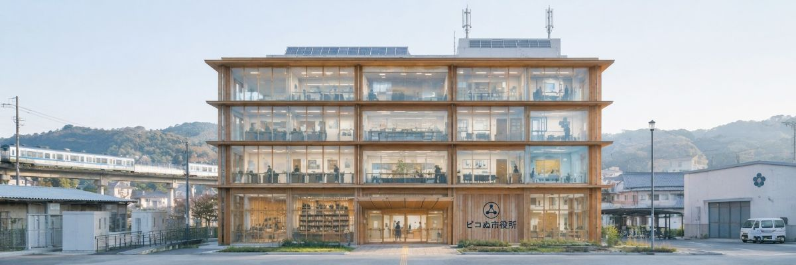

所在地・開庁時間
| 所在地 | ピコぬ市中央一丁目1番地 |
|---|---|
| 開庁時間 | 平日8:30〜17:15 |
| 休所日 | 土日祝、年末年始(12/29〜1/3) |
| 電話 | ぬぬ-ぬかピコ-1000（代表） |
フロア案内
| 1階 | 市民課（住民票・戸籍）、会計課 |
|---|---|
| 2階 | 記録政策課、現代病相談窓口、環境課 |
| 3階 | 時間効率支援課、福祉課 |
| 4階 | 都市計画課、不要不急保存課 |
| 5階 | 議場、議会事務局 |
本庁舎各フロアには、AI搭載型支援ロボット「ピコぬくん」が 配置されています。来庁者への案内、手続き補助、必要な情報の検索などを担当しています。 なお、ピコぬくんは利用者の状況に応じた説明を行うため、同じ質問に対して異なる回答をする場合があります。
組織一覧
- 総務部(総務課、財政課)
- 市民協働部(市民課、記録政策課)
- 健康福祉部(福祉課、現代病予防課)
- 都市整備部(都市計画課、連結技術推進課)
- 環境部(環境課、不要不急保存課)
- 時間効率支援課(単独部署)
- 議会事務局
各課の詳しい業務内容・お問い合わせ先は、組織図ページ(準備中)にて随時公開していきます。